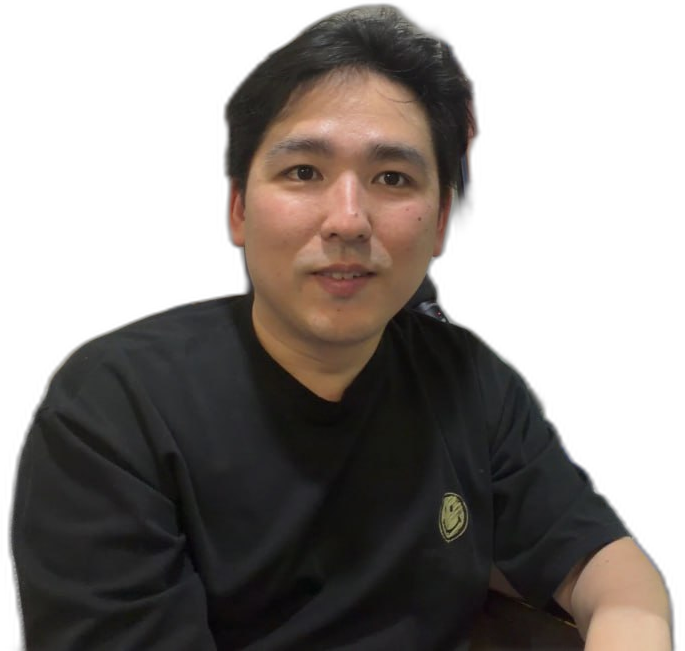

김진완 · 2015~2026 · 풀스택 개발자로 현업의 디테일을 익히고 팀을 이끌어 봤습니다. 그 실무 감각으로 다수 프로젝트와 국가과제를 더 정확하게 매니징하는 PM입니다. Kim Jinwan · 2015–2026 · I learned the details first-hand as a full-stack developer and led teams. That practitioner's sense lets me manage projects and government R&D with precision.

기획·관리만 하는 PM이 아닙니다. 개발·팀 운영을 직접 겪었기에 현장의 디테일을 이해하고, 그만큼 더 정확하게 매니징합니다.Not a PM who only plans and manages. Having done the engineering and run teams myself, I understand the details on the floor — and manage with that precision.
다수 프로젝트·국책과제 동시 운영. 고객사·보안·개발 프로세스 전반.Many projects & gov R&D at once — clients, security, full delivery process.
웹·앱·서버·DB·블록체인까지 단독개발 100% 다수.Web, app, server, DB, blockchain — many solo builds at 100%.
코인거래소 개발팀장, 3회 이상 팀 빌딩·R&R 설계.Exchange dev lead; built teams 3+ times and designed R&R.
Claude·Codex로 개발·문서·디자인·게임 에셋을 직접 생산.Ships code, docs, design and game assets directly with Claude & Codex.
벤츠 Live TV 총괄 PM, 르노 AR1/AR2 픽조이 게임플랫폼, 제네시스 블룸버그 웹앱, FOD 국책과제. 게임패드 서버 개발(WebRTC→Redis), 특허 2종 출원, 사내 Best Employee 수상.Lead PM on Benz Live TV, Renault AR1/AR2 PickJoy game platform, Genesis Bloomberg WebApp, FOD gov R&D. Built gamepad server (WebRTC→Redis), filed 2 patents, won internal Best Employee.
독거노인 건강 모니터링 3개년 국가과제, PBL 의대생 교육 솔루션(고려대), 디지털 휴먼 AI R&D, 아이닥터 VR 눈검사 제품군. 다수 프로젝트·팀·국가과제 동시 리딩.3-year gov R&D for elderly health monitoring, PBL medical-student training (Korea Univ.), digital-human AI R&D, iDoctor VR eye-exam suite. Led many projects, teams and gov programs at once.
소셜미디어·위치기반 서비스 단독개발 100%, ERC-20 토큰 6종·블록체인 서버, 코인거래소(벤타스비트) 메인 개발 및 개발팀장.100% solo builds of social media & location services, 6 ERC-20 tokens & blockchain servers, lead developer and dev lead for the VentasBit exchange.
웹에이전시 영업·기획(50여 프로젝트), 개인 창업으로 홈페이지 제작·블로그 마케팅 사업 운영. 비즈니스 감각을 먼저 익히고 개발로 전환.Web-agency sales/planning (50+ projects), then founded a homepage & blog-marketing business. Learned the business side first, then moved into development.
전 기간 55개 프로젝트. 회사·연도로 필터하고 카드를 눌러 상세를 보세요.55 projects across the full timeline. Filter by company/year, click a card for details.